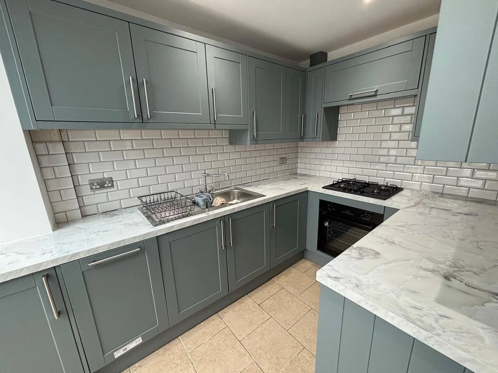
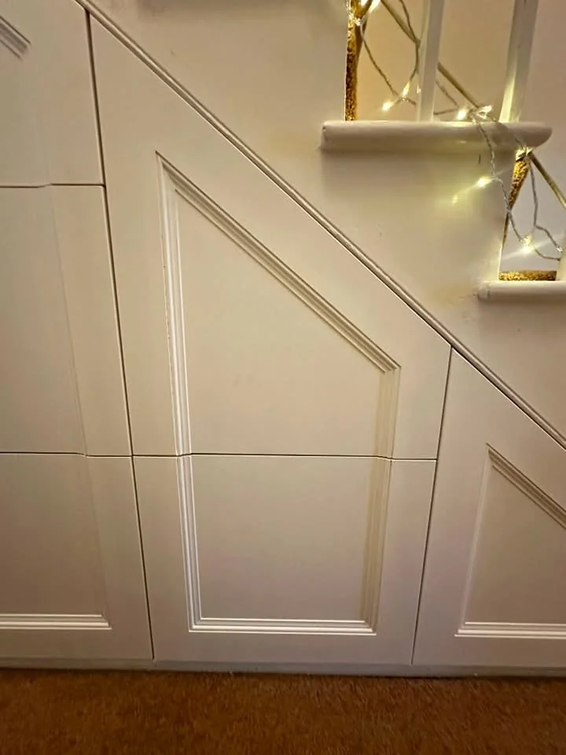
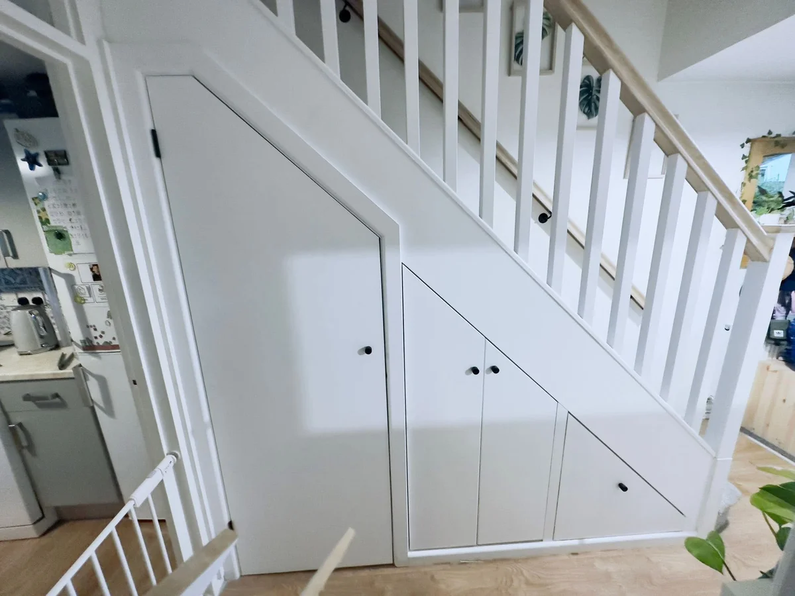
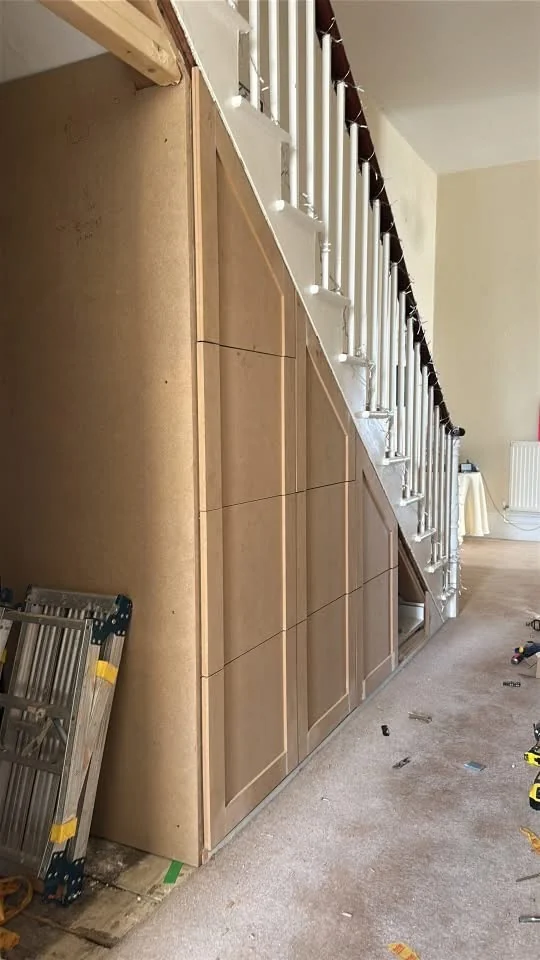
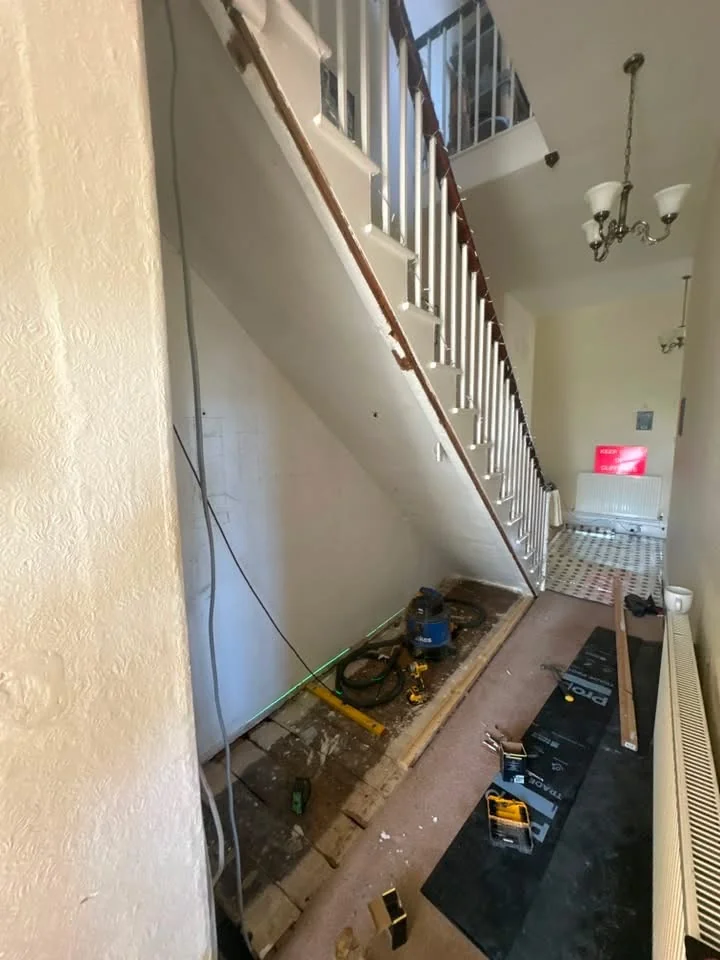
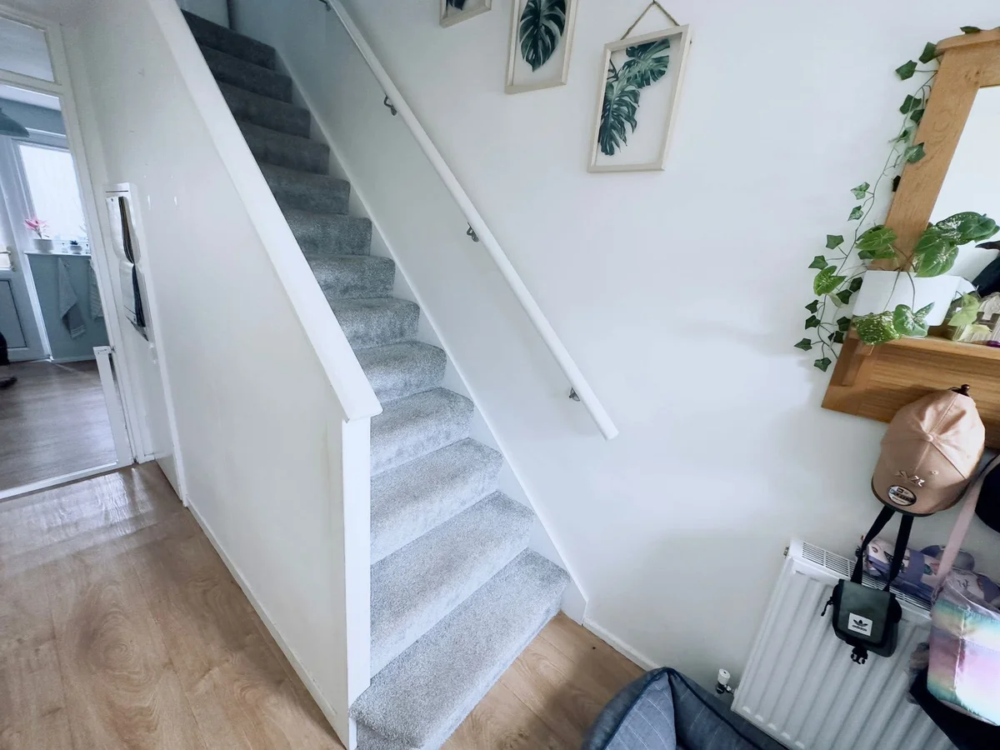
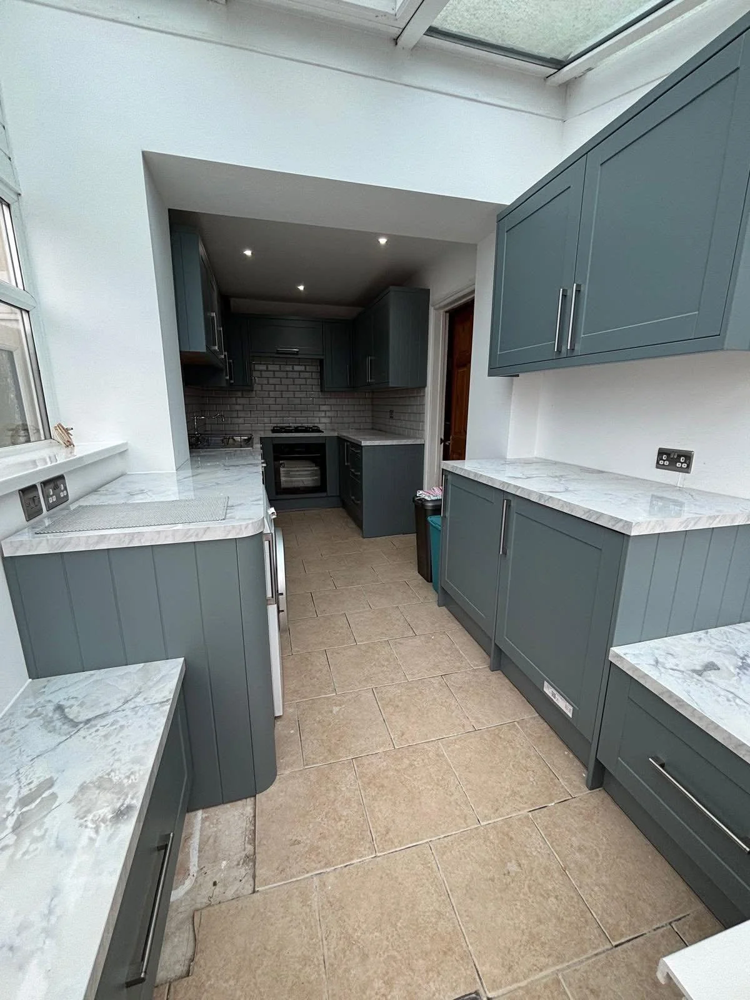

TORBAY & SOUTH DEVON · CARPENTRY & JOINERY
Interior Carpentry.
Fitted furniture, practical storage, wall panelling and joinery details for your home.
JN CARPENTRY & CONSTRUCTION
Fitted Furniture
Turn an awkward space into useful storage, add character with wall panelling, or discuss the carpentry needed for your kitchen. The portfolio includes fitted cupboards beneath a staircase, decorative panels and grey fitted kitchen units.
Request a Free Quote →

BESPOKE CARPENTRY
Joinery Details
The photos show the stages behind fitted interiors, including timber framework and cupboard fitting. Share the layout, measurements and finish you want, along with photographs of the existing space. Media wall enquiries are welcome too.
Discuss Your Project →

OUR TRANSFORMATIONS
Before & After
Matched project photographs, from the original space to the finished work.
Understairs Storage

Fitted cupboard doors make use of the space below the staircase.
Understairs Panelling
From the open understairs space to painted panelled doors.
View fitting stage →OUR PROJECTS
Recent Work
A selection of our carpentry and joinery. Open any photo to see the full image.
See Before & After →
TORBAY & SOUTH DEVON
About JN
JN Carpentry & Construction provides bespoke carpentry and joinery from Shiphay, Torquay, covering Torbay and South Devon. Services include media walls, decking and built-in furniture, alongside the interior and outdoor carpentry shown in our portfolio.
Fully insured for your peace of mind.
Share photographs and measurements to discuss your plans.
100% recommend from 23 Facebook reviews.
USEFUL INFORMATION
Your Questions
Can you build understairs storage?
Our projects include fitted cupboard doors beneath a staircase. Send photographs and approximate measurements of your space.
Do you undertake wall panelling?
Yes. Decorative staircase wall panelling is included in the project portfolio.
Can I enquire about a media wall?
Yes. Media walls are one of the services listed by JN Carpentry & Construction. Tell us about the layout and finish you would like.
FREE QUOTES
Get a Quote
Tell us about your project, where you are based and the finish you have in mind. The form opens WhatsApp with your details ready to review and send. You can add photographs there.
Based in Shiphay, Torquay.
Covering Torbay and South Devon.
JN CARPENTRY & CONSTRUCTION
Discuss Your Project
Torbay & South Devon · Free Quotes